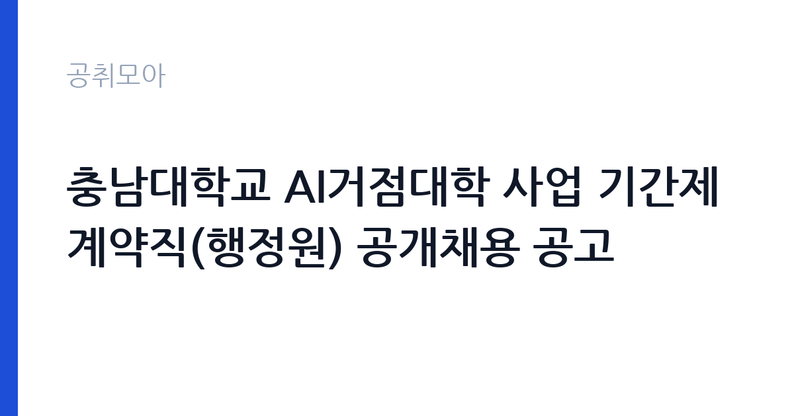

[국가기관] 충남대학교 AI거점대학 사업 기간제계약직(행정원) 공개채용 공고
충남대학교 · 대전 · 마감 2026-10-26 (D-8) · 출처 나라일터

한눈에 보는 모집 조건
| 기관 | 충남대학교 |
|---|---|
| 공고명 | 충남대학교 AI거점대학 사업 기간제계약직(행정원) 공개채용 공고 |
| 고용형태 | 기간제 |
| 근무지 | 대전 |
| 게시일 | 2026-10-19 |
| 마감일 | 2026-10-26 (D-8) |
지원자격, 이렇게 읽으세요
- 선임행정원 1명 행정원 4명
- 접수 ~2026-10-26 마감
- 세부 조건은 원문 공고문 확인
지원 자격은 직급에 따라 나뉩니다. 선임행정원은 사업 운영 경력과 팀 관리 경험을 요구하고, 행정원은 행정 실무를 수행할 인력을 뽑습니다. 공통으로 학력 기준과 임용 즉시 근무 가능 여부, 국가공무원법상 결격사유 부재가 적용됩니다. AI거점대학 사업은 여러 학과와 기업이 얽혀 있어, 협의와 문서 정리가 잦습니다. 따라서 공고문의 응시자격에 명시된 경력 요건을 충족하는지 확인하는 것과 함께, 사업 운영 경험을 어떻게 증명할지 준비하는 것이 중요합니다. 응시원서에는 지원 직급을 정확히 표기해야 합니다.
이 공고의 포인트
이 공고의 강점은 사업의 성격입니다. AI거점대학은 지역 AI 인재 양성과 산학 협력을 함께 다루는 사업이라, 행정원도 산업체와 학교 사이의 일정과 서류를 조율하는 경험을 쌓게 됩니다. 이 경험은 이후 공공기관의 사업 관리 직무나 대학 행정직으로 옮길 때 그대로 쓰입니다. 5명을 한 번에 뽑기 때문에 선발 인원이 많고, 선임과 일반 행정원의 역할 차이가 분명해 경력 단계에 맞춰 지원할 수 있습니다. 근무지가 대전으로 고정되어 있다는 점도 실무자에게는 장점입니다.
전형은 어떻게 진행되나
전형은 서류전형과 면접전형으로 진행됩니다. 서류에서는 응시 자격 충족 여부와 경력기술서의 구체성을 보고, 면접에서는 사업 운영 이해도와 협업 능력을 확인합니다. 접수는 이메일(dydwns7578@cnu.ac.kr)로만 받고, 마감은 2026년 10월 26일 오후 3시입니다. 선임행정원 지원자는 경력증명서로 경력 기간을 입증해야 하고, 행정원 지원자는 관련 자격이나 교육 이수 이력을 함께 제시하면 도움이 됩니다. 제출서류의 서명과 날인이 누락되면 접수가 반려될 수 있습니다.
원문에서 확인한 전형 방식
○ 선발직급 : 선임행정원 1명, 행정원 4명 ○ 고용형태 : 기간제 ○ 접수기간 : 2026. 10. 19.(월) ~ 10. 26.(월) 15:00 ○ 응시방법 : 이메일 접수(dydwns7578@cnu.ac.kr) ○ 문의처 : 충남대학교 대학혁신지원과 ☎ 042-821-6094
이런 분께 추천해요
- 대학 사업단에서 행정 실무를 시작하려는 신입 지원자
- 산학 협력 과제의 행정 지원을 해본 경력자
- 사업 총괄과 팀 운영 경험이 있는 선임급 지원자
지원 전 체크리스트
- 지원 직급별 경력 요건을 충족하는가
- 경력증명서 발급에 걸리는 시간을 고려했는가
- 마감 시각이 오후 3시임을 일정에 반영했는가
- 제출서류 양식과 서명·날인을 확인했는가
모집 일정과 제출 타이밍
접수 기간은 2026년 10월 19일부터 26일 오후 3시까지입니다. 서류전형 결과와 면접 일정은 개별 통보되며, 최종합격자의 임용일은 사업 일정에 맞춰 정해집니다. 기간제계약직이므로 계약 기간이 정해져 있고, 재계약은 사업 지속 여부와 근무 성과에 따라 결정됩니다. 같은 날짜에 브랜드 단과대학 사업도 행정원을 뽑고 있으므로, 두 공고의 직무와 근무 부서를 비교해 하나를 선택하는 편이 낫습니다.
직무 이해하기: 국가기관
AI거점대학 사업의 행정원은 교육과정 운영과 산학 과제 지원을 맡습니다. 교과목 개설과 강사 섭외, 수강 인원 관리, 현장실습 일정 조율이 일상 업무입니다. 기업 협약서와 과제 계약서를 정리하고, 예산 집행과 정산 자료를 만듭니다. 사업 성과지표를 취합해 보고서로 만드는 일도 포함됩니다. 선임행정원은 이 흐름을 설계하고 행정원의 업무를 배분하며, 사업단장과 대학 본부 사이의 보고 창구 역할을 합니다.
자기소개서 작성 팁
자기소개서는 행정 실무의 정확성을 보여주는 사례가 중심이 되어야 합니다. 여러 부서의 일정이 얽힌 사업에서 마감을 지킨 경험, 문서 오류를 사전에 잡아낸 경험 같은 구체적 장면이 좋습니다. 선임 지원자는 인원과 예산 규모를 숫자로 제시하세요. AI 사업에 대한 이해는 과장하지 말고, 본인이 맡을 행정 업무가 교육 운영을 어떻게 뒷받침하는지 설명하는 정도가 적절합니다. 지원동기에서는 AI거점대학 사업이 지역 인재 양성에서 갖는 의미를 한 문단으로 정리하면 좋습니다.
면접 준비 포인트
면접에서는 사업 운영의 세부를 아는지 확인합니다. 예산 집행 절차, 협약서 관리, 성과지표 취합 방식을 설명할 수 있어야 합니다. 일정이 겹칠 때 우선순위를 정하는 기준을 묻는 질문도 자주 나옵니다. 산학 협력 특성상 기업 담당자와의 커뮤니케이션 경험을 사례로 준비하세요. 계약직 신분과 재계약 조건을 이해하고 있는지도 확인 대상입니다. 답변은 업무 절차를 순서대로 설명하는 방식이 가장 신뢰를 줍니다.
급여·근무조건 읽는 법
기간제계약직 보수는 충남대학교 계약직 보수 기준과 경력에 따라 결정되며, 이 공고문에는 금액이 요약되어 있지 않습니다. 정확한 보수는 원문 공고문의 보수 항목이나 대학혁신지원과(042-821-6094)로 확인해야 합니다. 통상 기본급에 직무 관련 수당이 더해지고, 4대보험과 퇴직급여가 관련 법령에 따라 적용됩니다. 근무는 주 5일, 1일 8시간 기준이고 휴가·복무는 충남대학교 취업규칙을 따릅니다. 계약 기간이 사업 기간에 묶여 있으므로 계약 시작일과 종료일, 재계약 조건을 함께 확인하세요.
자주 묻는 질문
- 브랜드 단과대학 공고와 중복 지원할 수 있나요
두 공고는 별개 사업의 채용입니다. 중복 지원 가능 여부와 제한은 원문 공고문에 따르며, 일반적으로 하나의 공고에 하나의 직급으로 지원합니다. - 경력이 없어도 지원할 수 있나요
행정원 직급은 신입 지원도 가능한 구조이나, 세부 경력 요건은 공고문 응시자격 항목을 확인해야 합니다. - 계약 기간은 어떻게 되나요
사업 기간에 연동된 기간제 계약입니다. 구체적 시작일과 종료일, 재계약 조건은 원문 공고문에 명시되어 있습니다.
함께 보면 좋은 공고
[국가기관] 「충남대학교 AI인재양성부트캠프사업단」 전담직원(팀원) 공개 채용 공고 — 마감 2026-10-25[국가기관] 충남대학교 브랜드 단과대학 사업 연구교수 공개채용 공고 — 마감 2026-10-26[국가기관] 충남대학교 브랜드 단과대학 사업 기간제계약직(행정원) 공개채용 공고 — 마감 2026-10-26출처: 나라일터 공개정보를 바탕으로 공취모아가 정리한 안내글입니다. 모집 조건·일정은 변경될 수 있으니 지원 전 반드시 원문 공고문을 확인하세요. 본 글은 정보 제공용이며 합격을 보장하지 않습니다.